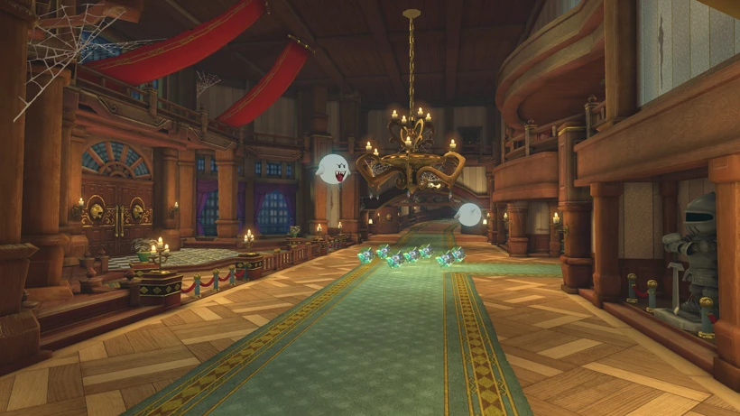
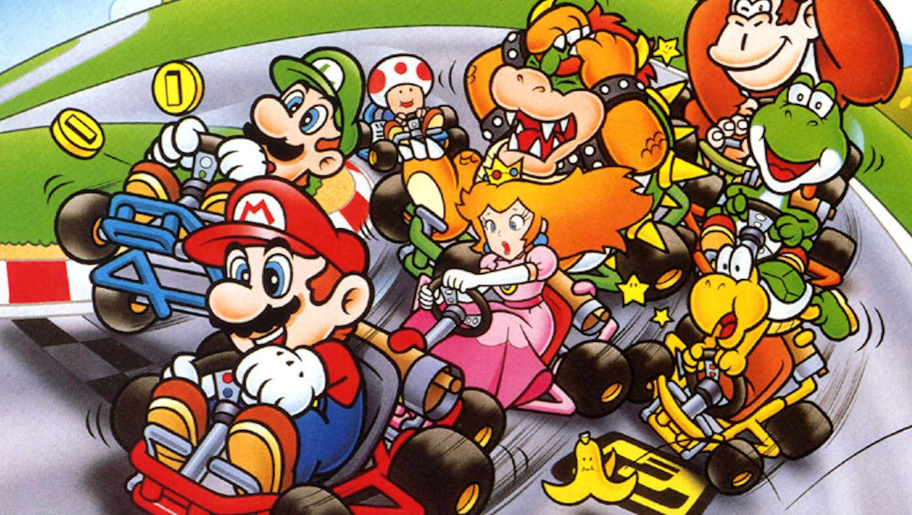
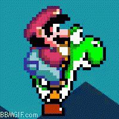
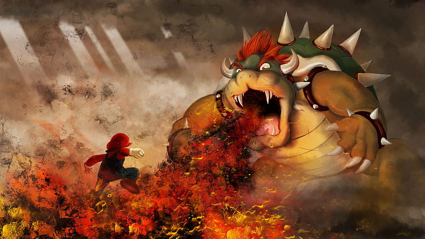

The Mystery of the Hidden Blocks
During my latest adventure, I stumbled upon a series of hidden blocks scattered throughout the Mushroom Kingdom. These mysterious blocks contain power-ups, extra lives, and secret passages. Join me as I uncover the secrets behind these hidden blocks and discover the incredible rewards they hold.
Exploring the Haunted Mansion

Last night, I dared to enter the notorious Haunted Mansion. The eerie atmosphere, ghostly apparitions, and spine-chilling sounds sent shivers down my spine. With courage as my guide, I delved deeper into the mansion's mysteries. Join me as I recount the spine-tingling encounters and reveal the secrets hidden within these haunted walls.
Racing to Victory in the Mushroom Cup

Revving up my engine, I entered the Mushroom Cup race with determination. The Mushroom Kingdom's most skilled racers stood in my way, but I was ready for the challenge. From lightning-fast speed boosts to treacherous obstacles, every lap tested my racing prowess. Join me as I share the exhilarating moments and the strategies that helped me claim victory!
Unleashing the Power of the Fire Flower
In my latest adventure, I discovered the incredible power of the Fire Flower. This mystical item granted me the ability to throw fireballs, incinerating enemies and obstacles in my path. Join me as I recount the thrilling moments of harnessing this fiery power and the strategic ways I utilized it to overcome challenges.
A Journey through the Sky: Riding Yoshi

I embarked on an unforgettable journey through the skies on the back of my faithful companion, Yoshi. Together, we soared through the clouds, collecting coins and avoiding perilous obstacles. Join me as I share the exhilarating moments of this airborne adventure and the bond I formed with Yoshi along the way.
Conquering Bowser's Castle: The Final Showdown

After countless trials and tribulations, I finally reached Bowser's Castle, the treacherous stronghold of the Koopa King. With determination burning in my heart, I faced off against Bowser in an epic battle for the fate of the Mushroom Kingdom. Join me as I recount the intense moments, the heart-pounding obstacles, and the ultimate victory over the formidable Bowser